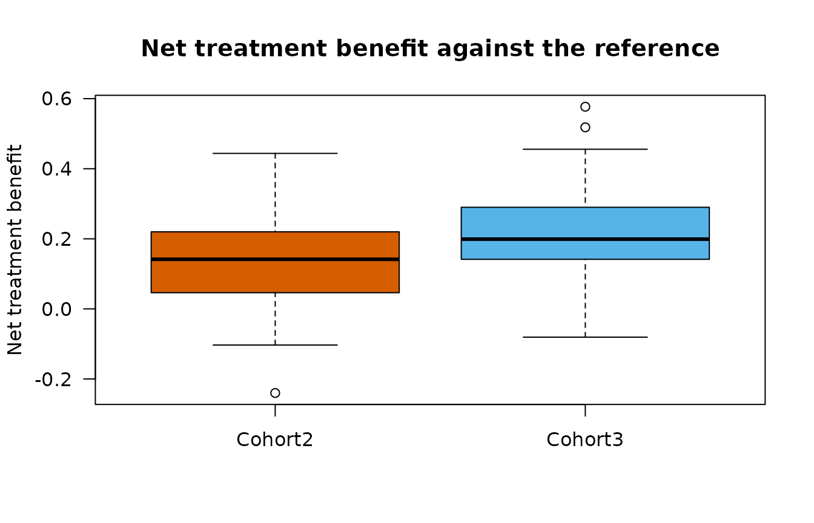
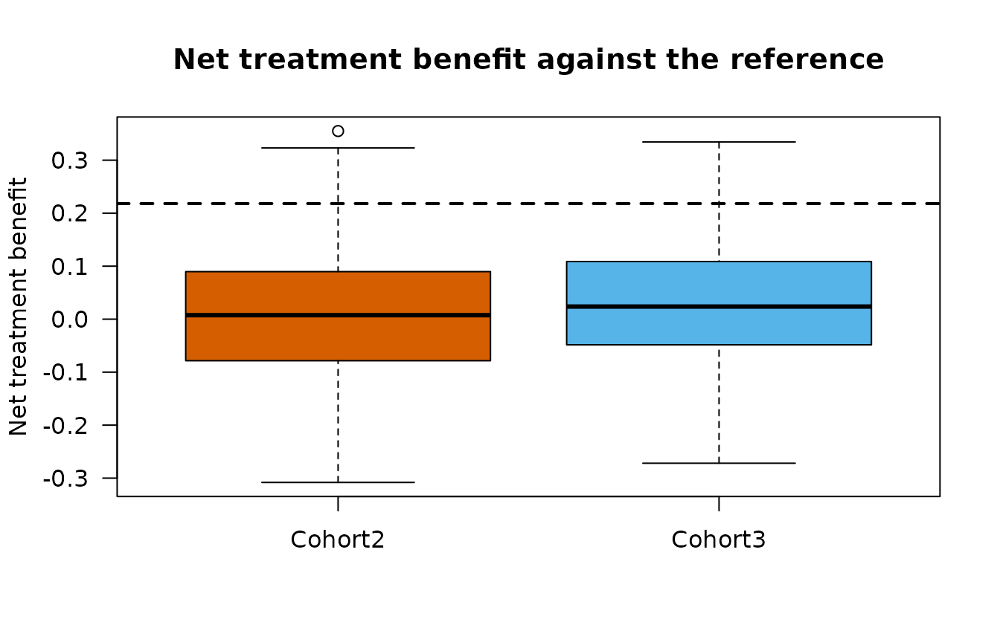
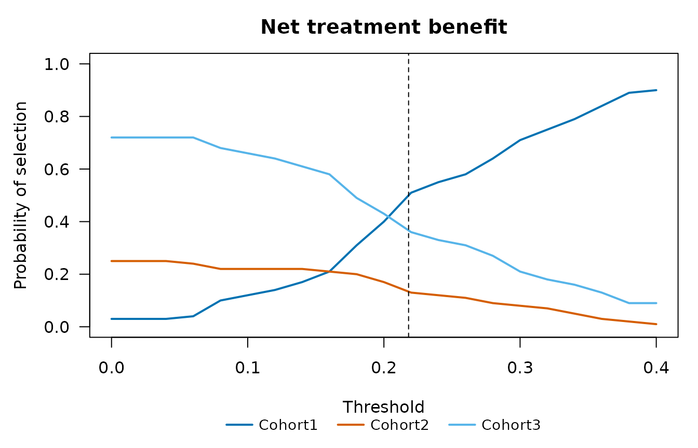

Three single-arm cohorts are run in parallel: Cohort1 receives the reference regimen and Cohort2 and Cohort3 receive new regimens. At the end of the trial one cohort is selected for further development. Cohort1 is the default, and a new regimen is selected only if the data favor it. This article compares decision rules based on the posterior benefit-risk score and on win statistics by their selection probabilities in simulated trials.
What makes a rule better
The statistics of the two approaches are on different scales, so their raw values cannot be compared. A fair comparison fixes, for every rule, the probability of selecting a new regimen when none is better than the reference (here, three identical cohorts), and then compares the probabilities of selecting the right cohort when a new regimen is better. The right cohort of each scenario must be fixed before the simulation and independently of the rules: by scenarios in which one cohort is at least as good as the others on every endpoint, and, for trade-offs between efficacy and safety, by the choice the clinical team would make if it knew the true parameters.
Scenarios
Each scenario gives the true PFS and OS medians, response rates and adverse event rates of the three cohorts. In the last scenario Cohort3 is the most active but has an adverse event rate of 0.45, which the clinical team is assumed to have judged unacceptable, so the right choice is Cohort2.
make_arm <- function(pfs, orr, os) {
CorOncoEndpoints::OncoArm(pfs.median = pfs, orr = orr, resp.cor = 0.4,
death.prop = 0.15, os.median = os)
}
ref_arm <- make_arm(5, 0.30, 14)
mid_arm <- make_arm(7, 0.45, 17)
top_arm <- make_arm(8.5, 0.55, 19)
scenarios <- list(
"Null" = list(arms = list(Cohort1 = ref_arm, Cohort2 = ref_arm, Cohort3 = ref_arm),
ae = c(0.20, 0.20, 0.20)),
"Cohort2 better" = list(arms = list(Cohort1 = ref_arm, Cohort2 = mid_arm,
Cohort3 = ref_arm), ae = c(0.20, 0.20, 0.20)),
"Cohort3 best" = list(arms = list(Cohort1 = ref_arm, Cohort2 = mid_arm,
Cohort3 = top_arm), ae = c(0.20, 0.20, 0.20)),
"Cohort3 toxic" = list(arms = list(Cohort1 = ref_arm, Cohort2 = mid_arm,
Cohort3 = top_arm), ae = c(0.20, 0.20, 0.45)))
right <- c("Null" = "Cohort1", "Cohort2 better" = "Cohort2",
"Cohort3 best" = "Cohort3", "Cohort3 toxic" = "Cohort2")
nsim <- 100The number of simulated trials is kept small so that the article builds quickly; with 100 trials a probability of 0.5 has a Monte Carlo standard error of 0.05, and an evaluation would use several thousand trials.
Rules
Four rules are compared. In each trial, the new cohorts whose statistic exceeds a threshold are candidates, and the candidate with the largest statistic is selected; without a candidate, Cohort1 is selected.
-
br_diff: the benefit-risk score against target values minus that of Cohort1. The cohorts must also be admissible: the posterior probability that the adverse event rate is at most 0.4 must be at least 0.8. -
br_ref: the benefit-risk score relative to Cohort1, with the same kind of admissibility condition on the difference of the adverse event rates. -
ntbandwr: the net treatment benefit and the win ratio against Cohort1, with priority OS, PFS, response and adverse event.
eps <- list(
Endpoint("OS", "tte", time = "os_tte", event = "os_event"),
Endpoint("PFS", "tte", time = "pfs_tte", event = "pfs_event"),
Endpoint("ORR", "binary", var = "response"),
Endpoint("AE", "binary", var = "ae", higher.better = FALSE))
crit <- data.frame(endpoint = c("ORR", "PFS", "OS", "AE"),
target = c(0.30, 0.50, 0.60, 0.40), time = c(NA, 6, 12, NA),
weight = c(1 / 3, 1 / 3, 1 / 3, 1), cutoff = c(NA, NA, NA, 0.8))
crit_ref <- data.frame(endpoint = c("ORR", "PFS", "OS", "AE"),
measure = c("rate", "hr", "hr", "rate"),
target = c(0.10, 0.80, 0.90, 0.10),
weight = c(1 / 3, 1 / 3, 1 / 3, 1), cutoff = c(NA, NA, NA, 0.8))Each scenario is simulated with 40 patients per cohort, enrolled over
12 months and analyzed at month 24. SimSelection() returns
one row per trial and cohort with all the statistics.
res <- lapply(seq_along(scenarios), function(i) {
sc <- scenarios[[i]]
d <- SimCohorts(nsim = nsim, n = c(40, 40, 40), arms = sc$arms, ae.rate = sc$ae,
cutoff = 24, a.time = c(0, 12), seed = i)
SimSelection(d, eps, crit, reference = "Cohort1", criteria.ref = crit_ref)
})
names(res) <- names(scenarios)
head(res[["Cohort3 best"]][, c("sim", "group", "br", "adm", "br_diff", "br_ref", "ntb",
"wr")])
#> sim group br adm br_diff br_ref ntb wr
#> 1 Cohort1 0.346 TRUE NA NA NA NA
#> 1 Cohort2 0.934 TRUE 0.588 0.653 0.2619 1.75
#> 1 Cohort3 0.600 TRUE 0.255 0.531 0.0544 1.12
#> 2 Cohort1 0.152 TRUE NA NA NA NA
#> 2 Cohort2 0.812 TRUE 0.660 0.489 0.3494 2.10
#> 2 Cohort3 0.904 TRUE 0.752 0.865 0.2737 1.77plot() shows the distribution of a statistic over the
simulated trials for each cohort, here the net treatment benefit against
Cohort1 in the scenario “Cohort3 best”.
plot(res[["Cohort3 best"]], "ntb")
The pairwise comparisons use the scoring rule of Gehan;
scoring = "peron" in SimSelection() uses the
rule of Péron instead.
Calibrated thresholds
The thresholds are chosen in the null scenario so that a new cohort is selected in at most 10% of the trials.
stats <- c("br_diff", "br_ref", "ntb", "wr")
thr <- do.call(rbind, lapply(stats, function(s) {
CalibrateThreshold(res[["Null"]], s, alpha = 0.10)
}))
thr
#> statistic alpha threshold p_nonreference
#> 1 br_diff 0.1 0.4913541 0.1
#> 2 br_ref 0.1 0.5610610 0.1
#> 3 ntb 0.1 0.2181250 0.1
#> 4 wr 0.1 1.5592949 0.1
thr_ntb <- thr$threshold[thr$statistic == "ntb"]In the null scenario, a new cohort is selected by the net treatment benefit when its value lies above the dashed line, the calibrated threshold.
plot(res[["Null"]], "ntb", threshold = thr_ntb)
Selection probabilities
oc_row <- function(r, s, th) {
oc <- SelectionOC(r, s, threshold = th)
p <- stats::setNames(oc$p_select, oc$group)
out <- c(p[c("Cohort1", "Cohort2", "Cohort3")], "(none)" = 0)
if ("(none)" %in% names(p)) out[["(none)"]] <- p[["(none)"]]
out
}
tab <- do.call(rbind, lapply(names(res), function(sc) {
do.call(rbind, lapply(seq_along(stats), function(i) {
data.frame(scenario = sc, rule = stats[i],
t(oc_row(res[[sc]], stats[i], thr$threshold[i])), check.names = FALSE)
}))
}))
tab$right <- mapply(function(i, g) tab[[g]][i], seq_len(nrow(tab)), right[tab$scenario])
knitr::kable(tab, digits = 2, row.names = FALSE,
caption = "Probability of selecting each cohort at the calibrated thresholds")| scenario | rule | Cohort1 | Cohort2 | Cohort3 | (none) | right |
|---|---|---|---|---|---|---|
| Null | br_diff | 0.90 | 0.02 | 0.08 | 0 | 0.90 |
| Null | br_ref | 0.90 | 0.05 | 0.05 | 0 | 0.90 |
| Null | ntb | 0.90 | 0.03 | 0.07 | 0 | 0.90 |
| Null | wr | 0.90 | 0.03 | 0.07 | 0 | 0.90 |
| Cohort2 better | br_diff | 0.51 | 0.49 | 0.00 | 0 | 0.49 |
| Cohort2 better | br_ref | 0.76 | 0.23 | 0.01 | 0 | 0.23 |
| Cohort2 better | ntb | 0.67 | 0.31 | 0.02 | 0 | 0.31 |
| Cohort2 better | wr | 0.66 | 0.32 | 0.02 | 0 | 0.32 |
| Cohort3 best | br_diff | 0.28 | 0.19 | 0.53 | 0 | 0.53 |
| Cohort3 best | br_ref | 0.44 | 0.17 | 0.39 | 0 | 0.39 |
| Cohort3 best | ntb | 0.49 | 0.15 | 0.36 | 0 | 0.36 |
| Cohort3 best | wr | 0.48 | 0.15 | 0.37 | 0 | 0.37 |
| Cohort3 toxic | br_diff | 0.50 | 0.47 | 0.03 | 0 | 0.47 |
| Cohort3 toxic | br_ref | 0.62 | 0.38 | 0.00 | 0 | 0.38 |
| Cohort3 toxic | ntb | 0.42 | 0.16 | 0.42 | 0 | 0.16 |
| Cohort3 toxic | wr | 0.41 | 0.17 | 0.42 | 0 | 0.17 |
The column right is the probability of selecting the
right cohort of the scenario. In the scenario “Cohort3 best”, the rules
select Cohort3 with probabilities between 0.36 and 0.53. In the scenario
“Cohort3 toxic”, they select Cohort2 with probabilities between 0.16 and
0.47, and Cohort3 with probabilities between 0 and 0.42. The
admissibility condition of the benefit-risk rules excludes a cohort with
too many adverse events, whereas in the pairwise comparisons the adverse
event has the lowest priority and decides only the pairs left undecided
by OS, PFS and response; a rule based on win statistics gives more
weight to safety when the adverse event comes earlier in the priority
order.
With several thresholds, SelectionOC() shows how the
selection probabilities change with the threshold; the dashed line is
the calibrated threshold of the net treatment benefit.
oc <- SelectionOC(res[["Cohort3 best"]], "ntb", threshold = seq(0, 0.4, by = 0.02))
plot(oc, threshold = thr_ntb)
Saturation of the score against target values
In the scenario “Cohort3 best”, the median scores against the target values are
r3 <- res[["Cohort3 best"]]
round(tapply(r3$br, r3$group, median), 3)
#> Cohort1 Cohort2 Cohort3
#> 0.237 0.763 0.890The score measures how certainly a cohort exceeds the targets, not by how much. When several cohorts clearly exceed the targets, their scores approach 1 and the differences carry little information; the score relative to the reference cohort and the win statistics compare the cohorts directly.
References
Buyse, M. (2010). Generalized pairwise comparisons of prioritized outcomes in the two-sample problem. Statistics in Medicine, 29, 3245-3257. https://doi.org/10.1002/sim.3923
Chakraborty, S., Dubey, A. K., Kumar, A. and Chan, I. (2026). A two-stage dose optimization framework for oncology drug development with multiple efficacy and safety endpoints via an integrated benefit-risk assessment. Statistics in Biopharmaceutical Research, published online. https://doi.org/10.1080/19466315.2026.2668381